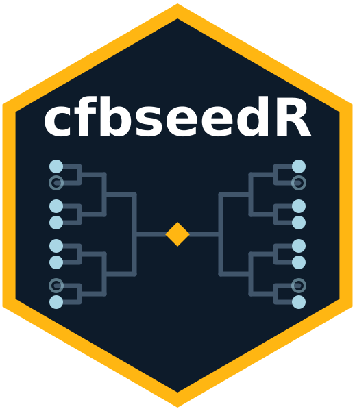

Compute CFB Game Results from Fixed Team Ratings
Source:R/ratings_compute_results.R
cfbseedR_ratings_compute_results.RdAn alternative compute_results function for cfb_simulations(): it
draws each unplayed game's margin from fixed team ratings instead of the
dynamic ELO of the default cfbseedR_compute_results(). Three kinds of
rating are supported, each with defaults fitted on FBS results:
"points": a margin rating in points per game against an average team (for example a least-squares margin rating, SP+ or FPI)."adj_epa": opponent-adjusted net EPA per play (offensive EPA/play minus defensive EPA/play allowed, adjusted for opponents)."raw_epa": the same net EPA per play without opponent adjustment.
Use it through ... of cfb_simulations():
cfb_simulations(games, teams, compute_results = cfbseedR_ratings_compute_results, ratings = tbl, rating_type = "points").
Usage
cfbseedR_ratings_compute_results(
teams,
games,
week_num,
...,
ratings,
rating_type = c("points", "adj_epa", "raw_epa"),
scale = NULL,
home_field = NULL,
margin_sd = NULL
)Arguments
- teams
A data frame of teams by simulation with at least the columns
simandteam. May carry anelocolumn between weeks.- games
A data frame of games with at least
sim,game_type,week,home_team,away_team,result, and optionallyneutral(0/1; thehome_fieldELO bonus applies when not neutral).- week_num
The (numeric) week to simulate. Only games with
week == week_num & is.na(result)receive a simulated result.- ...
Ignored. Present so the function accepts the arguments
cfb_simulations()passes to everycompute_resultsfunction.- ratings
A data frame with one row per team:
team(character, matching the team names ingames),rating(numeric, noNA, on the scale ofrating_type), and optionallygames(non-negative number of games behind each rating;NA= unknown). Teams missing fromratingsget a rating of 0 (league average).- rating_type
One of
"points"(default),"adj_epa"or"raw_epa". Picks the defaultscale,home_fieldandmargin_sd.- scale
Points of margin per unit of rating difference. Either one number or a named vector keyed by games-played buckets written
"lo-hi"(for examplec("0-3" = 32, "4-5" = 38, "6-7" = 45, "8-20" = 50)).NULLuses the default forrating_type.- home_field
Home-field advantage in points, added to the expected margin of games that are not neutral.
NULLuses the default forrating_type.- margin_sd
Standard deviation, in points, of a simulated margin around its expected value (at least 0): one number or a named bucket vector, as for
scale.NULLuses the default forrating_type.
Value
A list with two elements, as required by the compute_results
contract (see simulations_verify_fct()):
| Element | Type | Description |
teams | data.frame | The input teams table, unchanged. |
games | data.frame | The input games table with result filled for this week's previously missing results (home margin, integer). |
Details
The expected home margin of a game is
scale * (rating_home - rating_away) + home_field (no home_field on a
neutral site). The simulated margin is a draw from
rnorm(mean = expected, sd = margin_sd) rounded away from zero: up to the
next whole number when positive, down when negative. A draw of exactly 0
in a postseason game (in practice only with margin_sd = 0) is re-decided
by the win probability pnorm(expected / margin_sd) with a 1-point margin.
Ratings stay fixed through the season, so teams is returned unchanged.
Bucketed scale and margin_sd take the bucket of the less-observed
team of a game: the smaller games value of the two (a team missing from
ratings, or with NA games, does not count). A count takes the bucket
with the largest lower bound at or below it, so a count between buckets
takes the lower one, a count above every bucket the top one and a count
below every bucket the bottom one. When neither team has a count (no
games column, say) the game takes the top bucket, which treats the
ratings as full-season ratings; early in a season that overstates how
much the ratings are worth, so pass games.
Defaults by rating_type (buckets 0-3 / 4-5 / 6-7 / 8-20 games):
rating_type | scale | margin_sd | home_field |
"points" | 1.093 / 0.923 / 1.031 / 1.063 | 16.97 / 16.64 / 16.23 / 16.45 | 2.376 |
"adj_epa" | 31.88 / 37.89 / 45.18 / 49.61 | 17.04 | 2.763 |
"raw_epa" | 28.58 / 34.32 / 45.10 / 52.02 | 17.93 / 17.24 / 16.98 / 17.39 | 2.376 |
The "points" and "raw_epa" values are a walk-forward fit on FBS-vs-FBS
games 2014-2025 (2020 excluded) of a current-season least-squares margin
rating and of net EPA per play, with home_field fixed at the ELO
generator's within-season estimate. The "adj_epa" values are
sportsdataverse-py's modern-era pregame-prediction constants, fitted to
that package's adj_net rating; a rating from another opponent adjustment
may need its own scale and margin_sd. Fit record:
https://github.com/sportsdataverse/cfbseedR/blob/main/data-raw/cfb_generator_constants.md.
In a walk-forward test over the same seasons, scoring each week from
ratings built on earlier weeks, the ELO margin formula fed with
CollegeFootballData's pregame ELO (carried over between seasons) had the
smallest error overall: MAE 12.94 points, against 13.10 for the
least-squares points rating and 13.38 / 13.70 for the fitting script's
adjusted / raw EPA ratings. Its edge is early in the season, where the
current-season ratings have little to go on. From about six games on the
points rating is level with it (MAE 12.93 against 13.04 with 8 or more
games), so a points rating is a reasonable input for a late-season or
postseason simulation. To get ELO's early-season advantage from
cfbseedR_compute_results(), pass carried-over starting ratings as elo;
without them every team starts from a random rating.
See also
cfbseedR_compute_results() (the default ELO generator),
cfb_simulations(), simulations_verify_fct()
Examples
games <- cfb_games_example
teams <- cfb_teams_example
games$result[games$week >= 3] <- NA
teams$sim <- 1
games$sim <- 1
ratings <- data.frame(
team = teams$team,
rating = seq(10, -10, length.out = nrow(teams))
)
out <- cfbseedR_ratings_compute_results(
teams, games, week_num = 3, ratings = ratings, rating_type = "points"
)
out$games[out$games$week == 3, ]
#> # A tibble: 4 × 7
#> sim week game_type home_team away_team result neutral
#> <dbl> <int> <chr> <chr> <chr> <int> <int>
#> 1 1 3 REG A1 A4 12 0
#> 2 1 3 REG A2 A3 -7 0
#> 3 1 3 REG B1 B3 15 0
#> 4 1 3 REG B2 B4 39 0